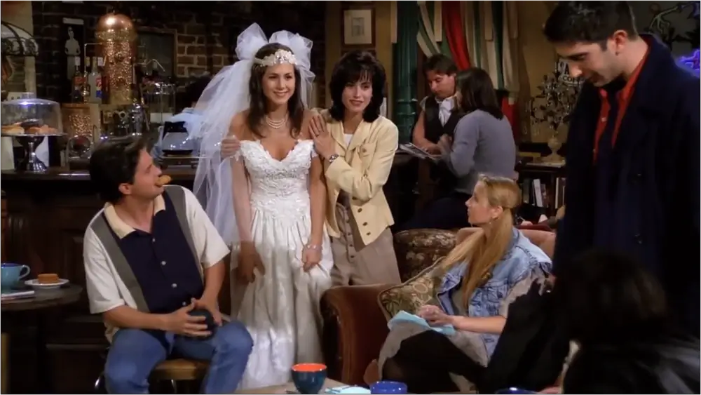

Первый сезон сериала "Друзья" вводит зрителей в мир Росса Геллера, Моники Геллер, Чендлера Бинга, Фиби Буффе, Джоуи Триббиани и Рейчел Грин. Их жизни переплетаются, когда Рейчел, бежавшая от свадьбы, приходит в квартиру Моники, и они снова становятся близкими друзьями. Сезон следит за их жизнью и отношениями, исследуя темы дружбы, любви, карьеры и смешных ситуаций, с которыми они сталкиваются. Основные сюжетные линии первого сезона включают в себя Росса, который пытается справиться с разводом, Монику, которая старается найти свою нишу в работе и личной жизни, и Рейчел, которая начинает новую жизнь в большом городе. Сезон также включает в себя множество незабываемых моментов и вечных шуток, которые сделали "Друзей" настоящей легендой телевизионного искусства. Этот сезон устанавливает тон для всего сериала, который продолжит радовать зрителей в течение десяти лет и станет классикой ситкомов.
Эпизод 1:
Эпизод, где Моника берёт новую соседкуЭпизод 2:
 Эпизод с сонограммой в конце
Эпизод с сонограммой в конце